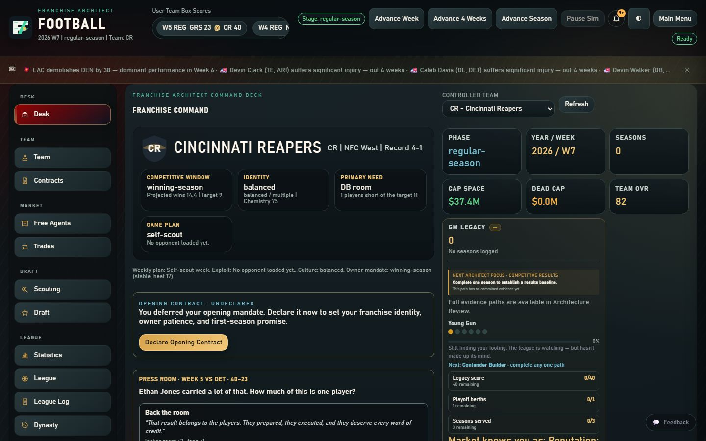
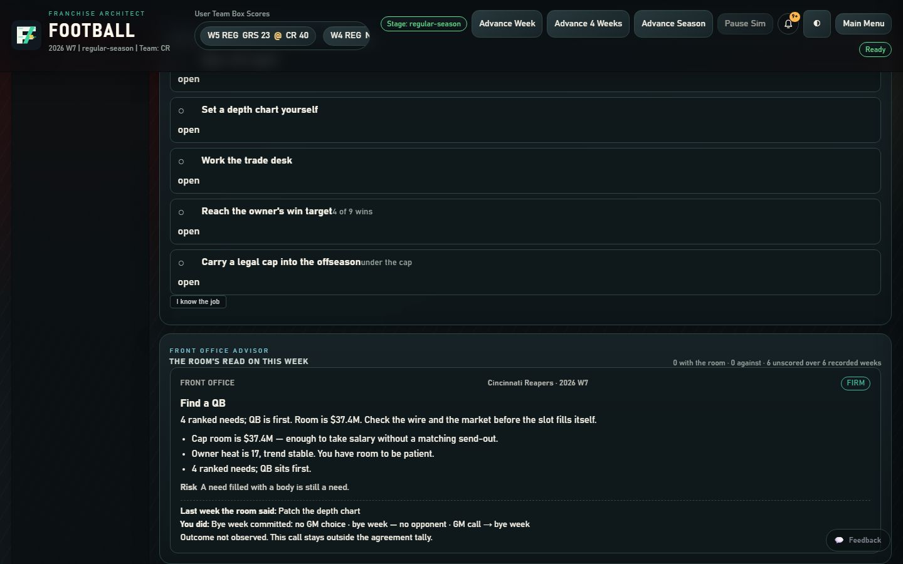
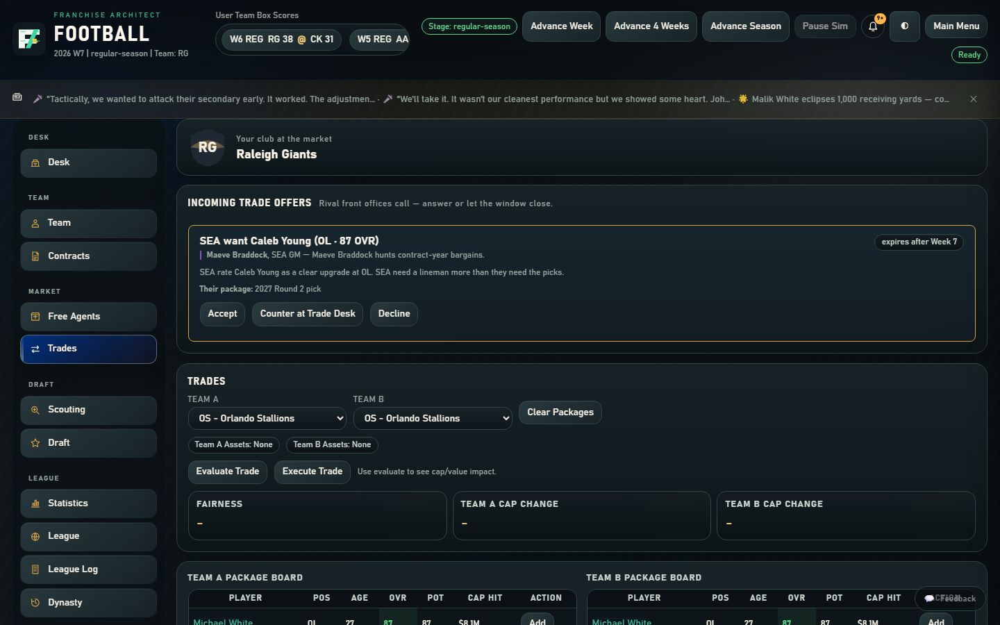
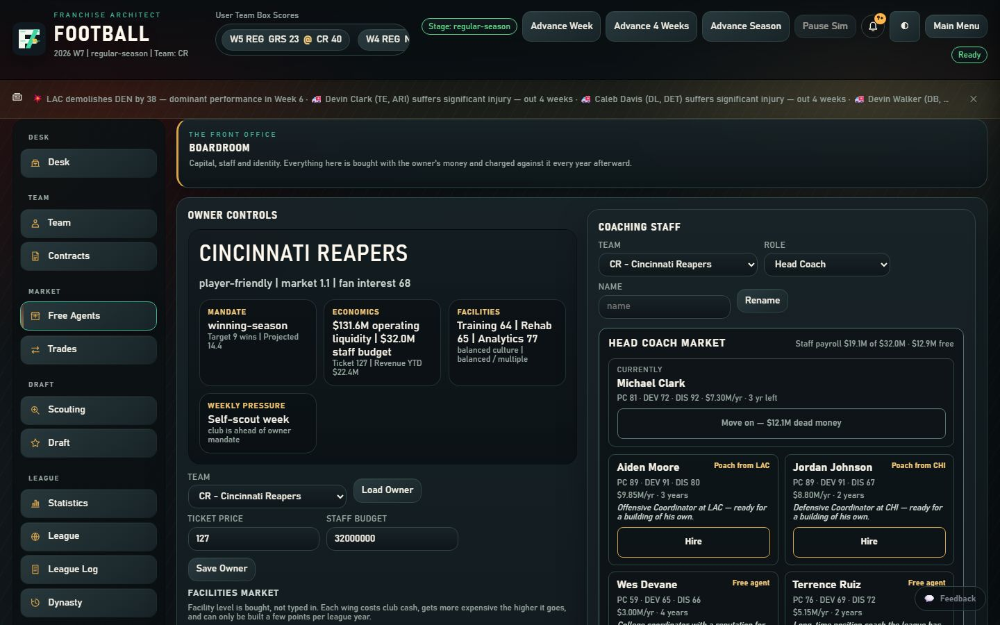
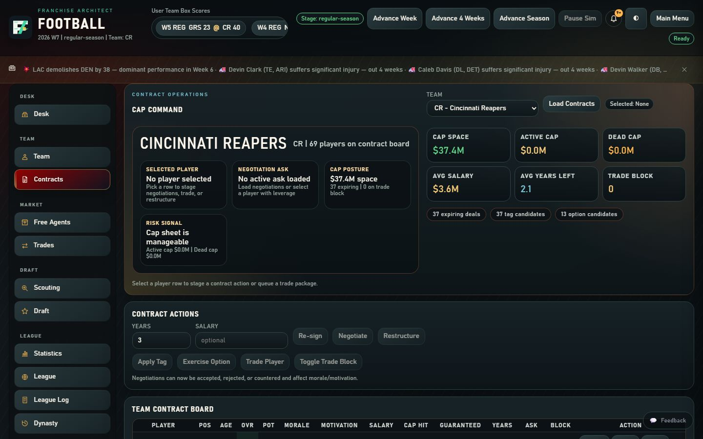

Press Kit
Everything you need to write about Franchise Architect: Football. The game is free to play and capture yourself; if you need something that is not here, email football@playfranchisearchitect.com.
Fact sheet
- Title
- Franchise Architect: Football
- Developer and publisher
- VaultSpark Studios LLC
- Genre
- Football franchise management (general manager) simulation
- Platform
- Web browser on desktop, tablet and phone
- Price
- Free. Nothing to buy inside the game.
- Status
- Free early access
- Accounts
- None. No account, no install, no server. Saves live in the browser, with optional export and GitHub Gist sync.
- League
- 32 clubs and 31 rival front offices, for as many seasons as you keep playing
- AI
- No AI services. Rivals, the Advisor and the news are computed by the game's own rules.
Boilerplate
Short
Franchise Architect: Football is a football franchise management game from VaultSpark Studios that runs in the browser. Build a club across decades: contracts, the salary cap, scouting, the draft, trades, a coaching staff, rivalries, and a league that remembers everything. No account, no install. Free in early access at playfranchisearchitect.com.
Long
Franchise Architect: Football puts you in the general manager's chair of one of thirty-two clubs and hands you the whole organization: the salary cap and every contract on it, a scouting department whose reads are honest about their own uncertainty, a draft board, and a trade market where thirty-one rival front offices each value players their own way and remember their dealings with you. Rival clubs trade with each other too. A weekly Front Office Advisor argues one call with the numbers behind it, an owner sets expectations and loses patience, and the league keeps a full history: awards, records, a Hall of Fame with an induction ceremony, and a timeline of your dynasty. There are no AI services behind any of it; every rival and every headline comes from the game's own rules. The simulation is checked against published real-world anchors rather than claimed to feel real. It runs entirely in the browser with no account and no install, and is free in early access from VaultSpark Studios.
Screenshots
Captured from the game at 1440 by 900 in the dark theme. Free to use in coverage of the game.










Brand assets
Use these as they are. Do not recolour, stretch, or place the mark inside another shape.


Release history
Every dated change since the game took its current name is in the changelog, which is also available as an RSS feed. The roadmap describes where the game is heading.
Rights
Franchise Architect, Franchise Architect: Football, and the marks above are proprietary to VaultSpark Studios LLC. Football league concepts in the game are fictionalized; the game is not affiliated with or endorsed by any professional sports league, team, or players association. Full notice on the terms page.